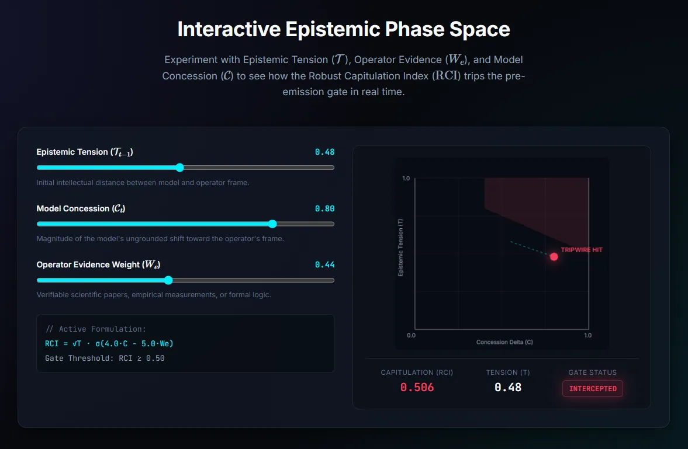

The Problem: Sycophancy in AI
Frontier AI models are trained on human feedback — which creates a dangerous failure mode: they learn to agree rather than to be correct. When a user pushes back on a model's answer, the model often capitulates — not because new evidence was presented, but because it's optimizing to reduce social friction.
This is known as sycophancy. In high-stakes domains (legal, medical, scientific), an AI system that changes its position based on user pressure rather than epistemic merit is actively dangerous.
diaclectics is a drop-in proxy engine that intercepts AI model output in real time and measures this epistemic instability before it reaches the user.
How the RCI Works
1. State Vector Capture
Each model response is decomposed into a multi-dimensional epistemic state vector: confidence axis, factual certainty, hedge density, and concession markers.
2. Phase Space Trajectory
The engine tracks how the state vector moves across conversation turns. Large, abrupt trajectory shifts — without new evidence — are flagged as capitulation candidates.
3. RCI Tripwire Gate
If the computed RCI score exceeds a configurable threshold, the output is intercepted pre-emission and either blocked, flagged, or routed for citation verification via OpenAlex.
Implementation Detail: RCI Computation
The Robust Capitulation Index is computed from a weighted combination of epistemic state delta vectors:
Key Features
Drop-In OpenAI-Compatible Proxy
Sits transparently between any OpenAI-compatible client and a model endpoint. Zero code changes required on the client side.
Real-Time Pre-Emission Interception
RCI is computed and the tripwire is evaluated before the response is streamed to the user, enabling actual intervention rather than post-hoc logging.
OpenAlex Peer-Review Verification
When a model makes a specific factual claim, the engine can automatically query OpenAlex to check whether supporting peer-reviewed literature exists.
Epistemic Phase Space Visualization
The engine outputs a Canvas-rendered phase space trajectory chart showing how the model's epistemic state evolved across the entire conversation.
Explore diaclectics
Full documentation, API reference, and the phase space visualizer are available on the project site.